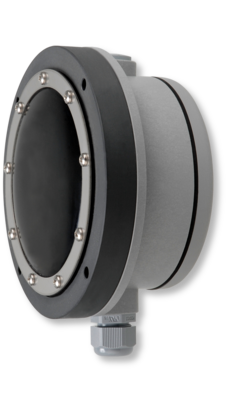
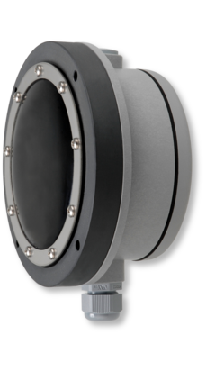

Компания Mollet обладает богатым опытом в области измерения и контроля уровня сыпучих веществ
Результатом нашей работы является широкая линейка приборов, которая позволяет подобрать решение для самых сложных задач
Мы производим оборудование для применения в общепромышленных и взрывоопасных зонах
Наши датчики разработаны таким образом, что на процесс измерения не оказывают влияния следующие факторы:
- изменения плотности материала,
- изменение давления процесса,
- наличие конденсата,
- вибрация,
- присутствие в процессе взвешенных частиц и пылей,
- характер потока,
- спекание материала,
- размер частиц.
Все приборы отличаются простотой и надежностью конструкции, а так же легкостью установки и обслуживания
Mollet предлагает уровнемеры для различных отраслей промышленности
Производство в России
С 2015 года было запущено совместное производство фирмы Mollet и компании НТППК ПЛАЗВАК, которая уже более 25 лет занимается разработкой и поставкой датчиков для измерения уровня.
На производственной площадке в г.Заречный, Пензенской обл. проводится сборка всего спектра продукции на основе немецких комплектующих
Уровнемеры и сигнализаторы имеют все необходимые сертификаты для реализации на территории Российской Федерации, республики Казахстан и республики Беларусь


 
